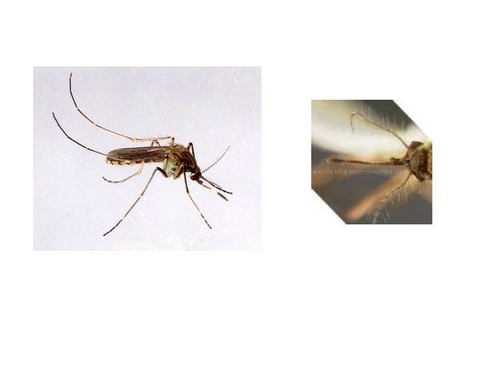

धान खेत का मच्छरRice-field Mosquito
Culex tritaeniorhynchus · Culicidae · INS-0168

- Scientific name वैज्ञानिक नाम
- Culex tritaeniorhynchus Giles, 1901
- Family कुल
- Culicidae
- Hindi हिंदी
- धान खेत का मच्छर
- Local names स्थानीय नाम
- dhan khet ka machchhar, machchhar, rice field mosquito, culex
- Status here यहाँ की स्थिति
- native
- Movement आवागमन
- Resident, here all year
- Known from कहाँ दर्ज
- Others have published records from the wider Awadh–Purvanchal plain, none yet from Basti–Ayodhya अवध–पूर्वांचल से दूसरों के प्रकाशित अभिलेख, बस्ती–अयोध्या से अभी नहीं
- IUCN IUCN
- not evaluated
- Review समीक्षा
- audited and independently read
When to look कब देखें
Present all year. साल भर मौजूद।
Tell it apart from इनसे अलग पहचानें
धान खेत का मच्छर / Rice-field Mosquito
Culex tritaeniorhynchus Giles, 1901 — Culicidae
धान खेत का मच्छर — भूरा मच्छर जो धान के खेत में लार्वे पलते हैं। रात को मानव रक्त चूसते हैं और खुजली हुई सूजन बनाते हैं। जापानी एनकेफेलाइटिस वायरस फैलाते हैं। गर्मी और बारिश में ख़ासकर बढ़ते हैं।
Quick Identification त्वरित पहचान
| Feature | Description |
|---|---|
| Adult length | 5–7 mm |
| Body colour | Brownish; thorax with grey markings |
| Abdomen banding | Dark brown with pale bands |
| Wing scale pattern | Dark scales on veins |
| Palpi (males) | Plumose (feathery); longer than females |
| Larva | Aquatic; tan to brown; breathing siphon short |
| Larval habitat | Rice paddies, ditches, polluted water |
| Resting posture | Body parallel to surface, head downward |
Field tip: Look for brown mosquitoes in rice paddies and water-filled ditches. Larvae hang from water surface by short breathing siphons. Adult females are blood-feeders, particularly active at dusk. Males are flower-feeders.
हिंदी — कैसे पहचानें: भूरा मच्छर, धान खेत में। लार्वे पानी में, सिर नीचे की ओर।
Morphology आकारिकी
Biometrics:
| Measurement | Range |
|---|---|
| Adult female length | 5–7 mm |
| Adult male length | 5–6 mm |
| Larva length | 6–8 mm |
| Pupa length | 4–6 mm |
Adult: Medium-sized mosquito. Head and thorax brownish with grey markings; abdomen dark brown with pale bands. Legs brown. Antennae segmented; male antennae plumose (feathery), female simpler. Proboscis (feeding tube) straight and prominent.
Larva: Aquatic; tan to brown; body cylindrical; head prominent. Breathing siphon short and thick. Rests parallel to water surface, head downward, sucking in food particles through mouth brushes.
Pupa: Comma-shaped; brown; respiratory trumpets on thorax.
हिंदी: भूरा मच्छर, लंबी पीढ़ी वाले नर। लार्वा पानी में लटका हुआ।
Behaviour & Ecology व्यवहार और पारिस्थितिकी
The Rice-field Mosquito is an abundant denizen of rice paddies, wetlands, and any water-filled depression during the monsoon and post-monsoon months. Females are anthropophilic blood-feeders, seeking blood meal from humans and animals at dusk and night; males feed on flower nectar. Larval development is rapid in warm water; complete life cycle from egg to adult can occur in 7–10 days. The species is a known vector of Japanese encephalitis virus (JEV) across South and Southeast Asia, transmitted primarily during the monsoon and post-monsoon seasons when large populations coincide with human habitation near flooded paddies.
The ecology of the species is inseparable from rice agriculture; the wide expansion of rice cultivation across Asia has expanded the range and density of this mosquito.
हिंदी: मादा रक्त चूसती है, नर फूलों का रस लेती है। धान खेत में लार्वे, गर्मी में तेजी से बढ़ते हैं।
Life Cycle / Phenology जीवन चक्र
| Stage | Duration | Notes |
|---|---|---|
| Egg | 2–3 days | Laid on water surface in raft |
| Larva | 4–6 days | Aquatic; four instars; rapid in warm water |
| Pupa | 1–2 days | Aquatic; brief stage |
| Adult | 20–30 days | Females blood-feed; males nectar-feed |
| Cycle | 8–12 days | Multiple generations May–November |
हिंदी: अंडा 2–3 दिन, लार्वा एक हफ़्ता, प्यूपा 2 दिन। 10–15 दिन में नया मच्छर। गर्मी में बहुत तेजी से।
Host Plants or Prey आहार
For larvae (filter-feeders in water):
- Organic detritus, algae, bacteria, protozoa in rice paddies and water bodies
For adult females (blood-feeders):
- Human blood (preferred)
- Animal blood (cattle, pigs, birds)
For adult males (nectar-feeders):
- Various flowers; particularly grasses and crops in surrounding areas
Predators / Natural Enemies शत्रु
- Aquatic insects: dragonfly nymphs, aquatic bugs; voracious predators of mosquito larvae
- Fish: many species consume mosquito larvae; used in biological control
- Copepods: small crustaceans that consume mosquito larvae
- Entomopathogenic fungi: Metarhizium and Beauveria infect adults
- Predatory mosquitoes: Toxorhynchites species (predatory mosquitoes)
Agricultural / Human Relevance कृषि प्रासंगिकता
Public health significance: The Rice-field Mosquito is the principal vector of Japanese encephalitis virus (JEV) in rice-growing regions of Asia. JEV causes seasonal epidemic encephalitis with high fatality rates in children and the elderly. Vaccination programs are the primary human control measure. The mosquito is also a nuisance blood-feeder, causing itching and local reactions.
Management: Larval control through draining of rice paddies when possible, use of fish (particularly Poecilia reticulata, Gambusia) in water bodies, and insecticide spraying in epidemic seasons. Adult control involves insecticide spraying and bed nets.
Expected Locally स्थानीय रूप से अपेक्षित
Not a field record. Written from published accounts for eastern Uttar Pradesh. No confirmed local sighting yet — if you have seen it, that is what the atlas needs.
अभी तक स्थानीय पुष्टि नहीं। यह विवरण प्रकाशित स्रोतों से है, किसी अवलोकन से नहीं।
Expected throughout Basti and Ayodhya districts, particularly in areas with extensive rice cultivation. Larvae present in rice paddies and water bodies during monsoon and post-monsoon seasons (June–November); adults active year-round but peaks during warm months. A photograph of larva or adult with date and location would confirm local presence.
Distribution वितरण
Global range: South and Southeast Asia, particularly in rice-growing regions.
In India: Throughout rice-growing regions, particularly in eastern and peninsular India.
In Uttar Pradesh: Common in rice-growing districts of eastern UP.
In Basti district / eastern UP: Expected in rice paddies and wetlands; very common during monsoon season.
Research Questions शोध प्रश्न
Anyone can investigate these | कोई भी इन प्रश्नों की जाँच कर सकता है
- What is the seasonal abundance of mosquito larvae in rice paddies in your area? / आपके धान के खेत में मच्छर के लार्वे किस महीने में सब से ज़्यादा होते हैं? — Dip net sampling weekly; count larvae.
- Does draining paddies reduce larvae populations? — Compare drained and flooded paddies.
- Do fish (Gambusia or local fish) reduce mosquito larvae? — Add fish to some paddies; monitor larval populations monthly.
- How many days does development take from egg to adult? — Collect egg rafts; rear indoors; record timing.
- What is the impact of insecticide spraying on adult populations? — Monitor with light traps before and after spraying.
Similar Species मिलती-जुलती प्रजातियाँ
| Species | How to tell apart | हिंदी | |
|---|---|---|---|
| Culex quinquefasciatus ([[culex_mosquito\ | Southern House Mosquito]]) | Urban habitat preference; larvae in dirty water; slightly different morphology | शहरी मच्छर, अलग जल |
| *[[malaria_mosquito\ | Anopheles]]* species (malaria mosquitoes) | Larvae at angle to surface, not parallel; palpi long in females; different colouration | मलेरिया मच्छर, अलग मुद्रा |
| Aedes species (fever mosquitoes) | Distinct white markings; different habitat (clean water, containers); larvae rest vertically | डेंगू मच्छर, सफ़ेद निशान |
Field rule: Brown mosquito with pale abdominal banding, larvae with short siphon resting parallel to water surface in rice paddies: Rice-field Mosquito (Culex tritaeniorhynchus).
Taxonomy & Classification वर्गीकरण
Original description. Described by Giles in 1901 in Gnats or Mosquitoes based on specimens from India.
Subspecies. Monotypic — no subspecies are formally recognised.
Family and order placement. Order Diptera (true flies), family Culicidae (mosquitoes). The family comprises about 3,500 species, many of medical importance.
Phylogenetic notes. Culex tritaeniorhynchus is part of a large genus of Culex species with overlapping ecology and medical significance.
IUCN status rationale. Not evaluated. As a widespread, abundant species, no conservation assessment is warranted; the species is of concern as a disease vector.
Photo Gallery फोटो गैलरी
Photos needed आवश्यक फोटो
- [ ] Larva in water with breathing siphon (जल में लार्वा)
- [ ] Adult mosquito resting (बैठा हुआ मच्छर)
- [ ] Egg raft on water (अंडों की पंक्ति)
No photos yet — add field photos to media/species/rice_field_mosquito/ and run node scripts/sync_photos.js.
References संदर्भ
- Giles, G.M. (1901). Gnats or Mosquitoes. John Bale, Sons & Danielsson, London. [original description]
- Harbach, R.E. (1994). Review of the internal classification of the genus Culex (Diptera: Culicidae), with notes on the phylogeny of the Culicidae. Proceedings of the Entomological Society of Washington 96: 319–361.
- Campbell, G.L., Hills, S.L. & Metselaar, M. (2011). Dengue and Japanese encephalitis — shared antigenicity, epidemiology and pathogenesis relate to prevention strategies. Lancet Infectious Diseases 11: 470–478.
- Singh, R.P. & Singh, K.R. (1996). Mosquito-borne encephalitis in India. Annual Review of Entomology 41: 319–346.
- Sharma, V.P. & Sharma, P. (2010). Japanese encephalitis in India. Encyclopedia of Arthropod-transmitted Infections 5: 436–450.
- GBIF Occurrence Data — Culex tritaeniorhynchus, India (2023).
Source file: species/fauna/insects/rice_field_mosquito.md